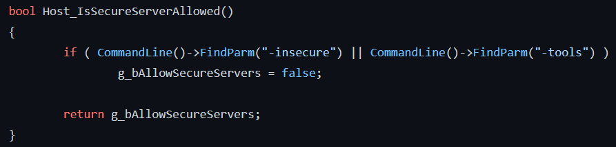

Hey, in this short article i will present you how i found an exploit to join VAC secured community servers with the -insecure flag enabled on CS:GO.
A bit of context
2 days ago, this exploit was released to unknonwcheats. But as the file wasn't approved and it was only a DLL no matter what, i decided to try to replicate it myself without trying to reverse it. It wasn't that hard but it was a good learning opportunity !
How -insecure works
The -insecure flag is used to disable VAC and still launch CS:GO, it is useful for debugging the game or to play with cheats without having a chance of VAC getting triggered. The thing is this flag prevents you from joining VAC secured servers such as community servers. This is what message you get if you try to connect to one with this flag enabled :
note for translation : You can't connect to the server because you have -insecure enabled.
How to bypass that
Thanksfully the source code of 2k18 CS:GO leaked in 2020 and is avalaible on Github. After looking for insecure in the repo we quickly find a function named Host_IsSecureServerAllowed, which looks like this :

But remember, this is from 2018 CS:GO, we still need to find it in IDA, same thing in IDA, load engine.dll and look for the insecure string, by looking at the xrefs we can find 2022 Host_IsSecureServerAllowed function :
We can see that the function is looking for insecure or tools or edit flags and if it find them, it returns false, thus kicking you from the server you are trying to join.
From here we can use the IDA plugin SigMaker to generate a signature for this function. The only thing that is left to do is hook the function, and always return true so the check for the insecure flag are never performed.
Hooking Host_IsSecureServerAllowed
Hooking this function with MinHook is pretty straightforward, here is the pseudo code :
We are basically defining the Host_IsSecureServerAllowed function, and in it, we just say to always return true. Then we scan for the (insanely long) signature for this function and hook it with MinHook.
From now, just build the DLL, inject into CS:GO and you'll see, with -insecure you'll be able to join VAC protected community servers.
Limitations
At the writing of this blogpost, you can only join community servers with this flag enabled, this may change. Also, remember that even if you join a VAC secured server with this bypass, VAC will still be running thus this exploit is pretty useless. It was only a learning opportunity to me and shouldn't be considered as a VAC bypass.